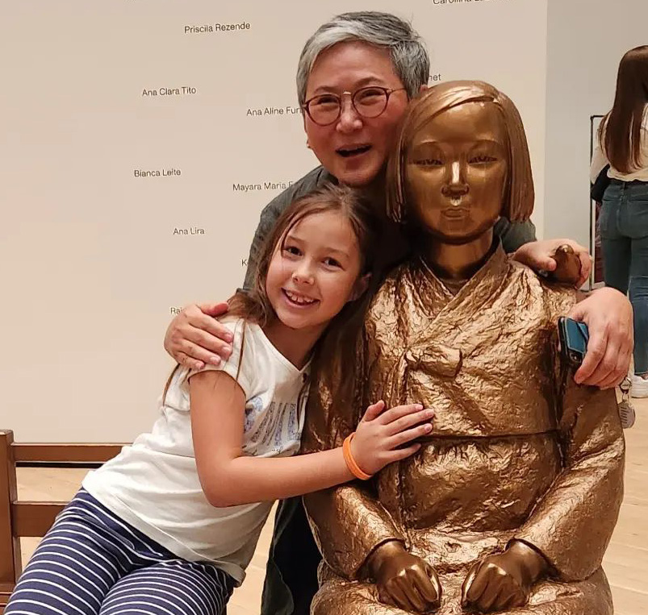

01
Location
Plan your visit
A small garden on Front Street, free and open to everyone. Come sit with the Statue of Peace.
Address
805 S. Front Street
Philadelphia, PA
Queen Village, on Front Street between Queen and Catherine Streets
- Hours
- Open daily
- Admission
- Free
Step-free. The plaza is level with the sidewalk, with a flat, paved path to the statue and benches.

02
Getting here
By foot, transit, bike, or car
Bus
Several SEPTA routes run nearby along Front Street, 2nd Street, and Columbus Boulevard.
Subway
Market-Frankford Line to 2nd Street Station, then walk south about 15 to 20 minutes.
Bike
Indego Bike Share stations are nearby in Queen Village and Society Hill.
Parking
Limited street parking on nearby blocks. Please respect residential permit zones.
03
Map
What you'll find

- Statue of PeaceA bronze girl and an empty chair. You are welcome to sit beside her.
- InscriptionAn etched metal sign tells the history behind the memorial.
- BenchesConcrete and wood benches with low lighting.
- Native gardensWitch hazel, magnolia, grasses, phlox, and spring tulips.
- LightingPedestrian lights keep the plaza welcoming after dark.
- Street treesBlack gum trees that turn red in the fall.
04
Views
See the Plaza from every side

05
While you're here
A memorial and a neighborhood garden

Visitor guidelines
Sit with her. You may sit in the empty chair beside the statue. Many visitors do.
Flowers are welcome. Please keep tributes off the planting beds.
Keep it quiet. Neighbors live across the street.
Dogs on leash and out of the gardens.
06
Nearby
Other ways to experience the Plaza

History
The story behind the statue
The survivors who broke the silence, and the movement that followed.
Read the history
Programs
Concerts and cultural days
Free music, dance, poetry, and film throughout the year.
See programs
Nearby
The Memorial District
The Korean War, Vietnam Veterans, and Irish Hunger memorials are a short walk north along the waterfront.
Map the walkHelp keep the Plaza free and open.
Donations fund free programs and long-term care of the statue and gardens.
Donate